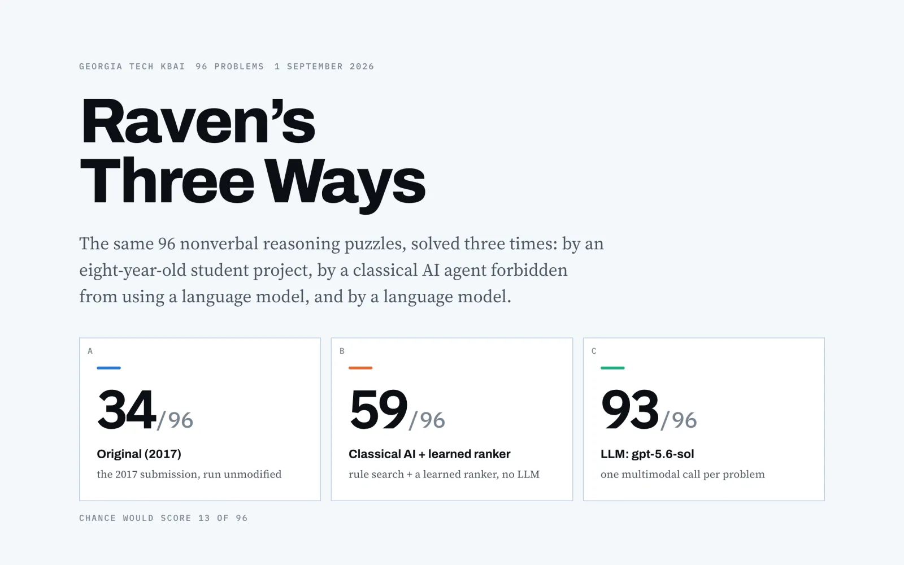
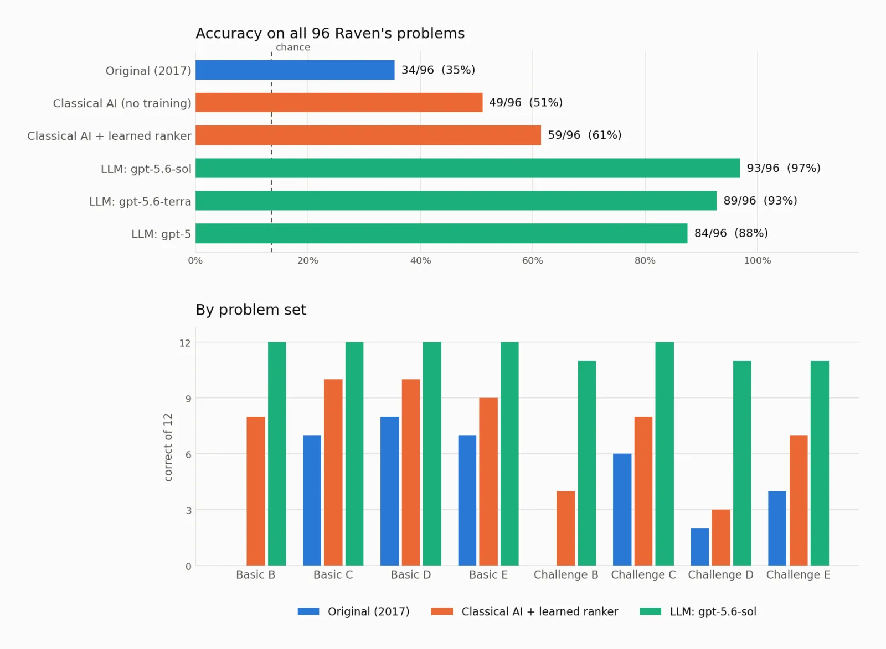
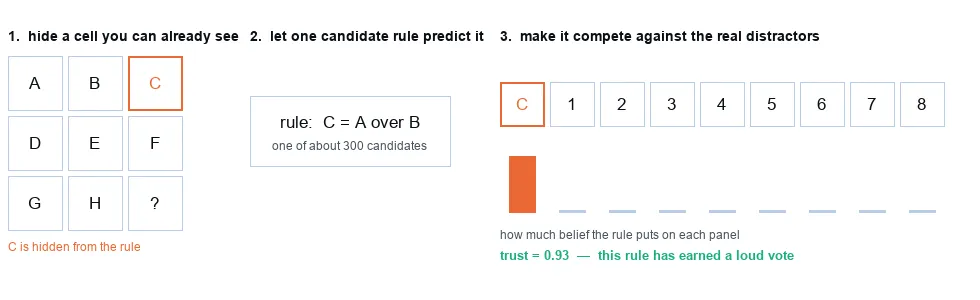
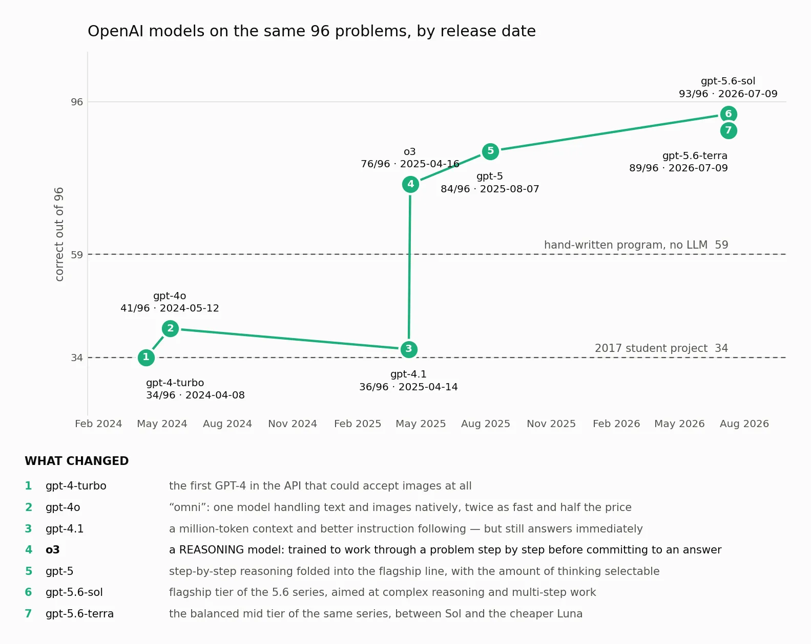
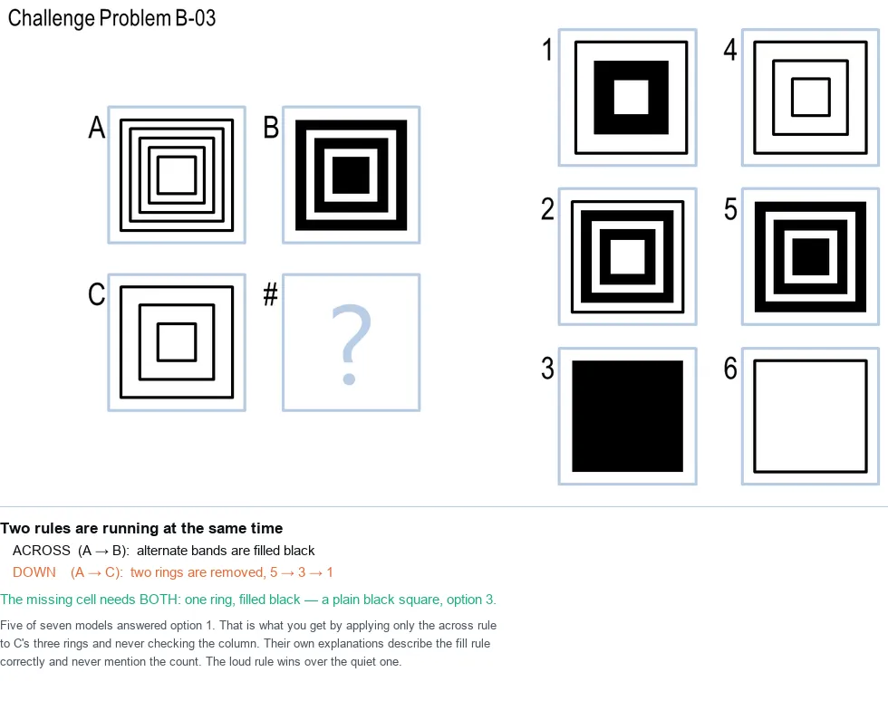
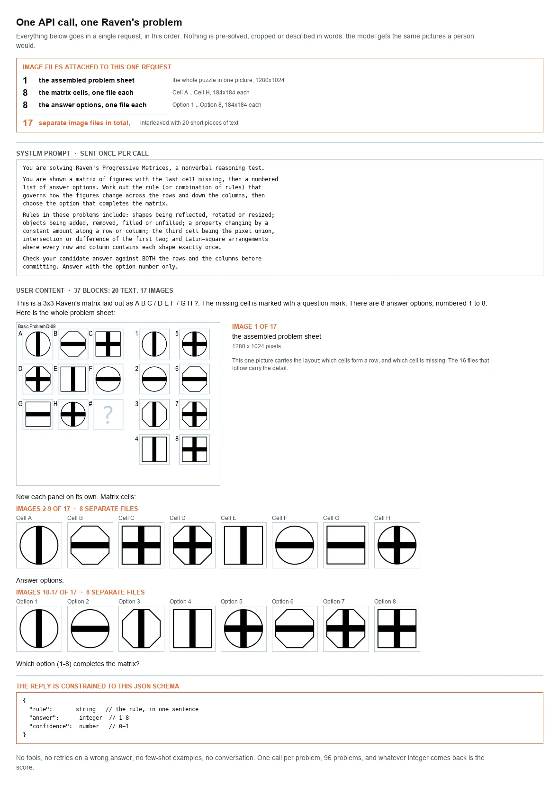

Experiment · September 2026
Can a computer pass an IQ test?

Python, Claude Code, 16 language models
- 13random guessing
- 34a student's 2017 program
- 59expert system, no language model
- 93current language model
Three programs, one from 2017 and two from this year, take the same 96 Raven's Progressive Matrices, the wordless reasoning test from 1936 that still shows up in hiring. A current language model, given the puzzle sheet and every cell as images, nearly aces it.
Read the write-up and browse the code on GitHub Prompt history
What it is
Raven's Progressive Matrices is a reasoning test from 1936. It uses no words and no numbers. You see a grid of pictures with the last one missing, and you pick the piece that completes the pattern. It still shows up in some hiring and admissions.
I gave Claude Code one job during a class: take the same 96 puzzles and have three programs sit the test. The first is a program I wrote as a student in 2017, for Georgia Tech's course on knowledge-based AI. The second is new and is not allowed to use a language model. The third is a language model.

Here is a typical puzzle. Every cell has an outer shape and an inner bar, and each row and column uses each shape and each bar once, like a sudoku made of pictures. The answer is option 3, the octagon with the vertical bar.
All three programs got this one, though the new program picked 7 before it learned which rules to trust. The language model, `gpt-5.6-sol`, picked 3 in 4.8 seconds and explained itself: "Both the outer shapes and bar patterns cycle through three states in each row and column, requiring an octagon with a vertical bar."
A tour of the results

The 2017 program ran with not a single character changed and scored 34 of 96 in 34 seconds. It turns each picture into a few numbers, mostly how much of the square is black ink, and skips all 24 of the 2x2 puzzles. Fixing its two arithmetic bugs makes it slightly worse, because the weights had been tuned around them.
The new program without a language model is a classic expert system. It proposes about 300 candidate rules for every puzzle (flips, rotations, overlaps, counts, sudoku arrangements) and searches for the one in force. It scored 55 of 96 nine and a half minutes into the session, and 59 once it learned how much to trust each kind of rule.

After class I asked for more. Sixteen language models from nine companies ran the same puzzles with the same prompt. Four tied at 92, and their prices differed by almost five to one. Five scored below the program with no AI in it. Running all sixteen models on every puzzle cost $44.72 in total.

`gpt-4.1` and `o3` came out two days apart and scored 36 and 76. What changed was that `o3` works the problem through step by step before it answers. That moved the score more than two years of scaling did on either side.
The failures are not random. When several models miss the same puzzle, about 68% of them choose the same wrong option.

Here two rules run at once. Five of seven models applied the dramatic one (fill alternate bands black) and missed the quiet one (remove two rings each step). The 2017 program skipped it. The expert system picked 2, which was wrong. `gpt-5.6-sol` got it right. And the best model reported 0.99 confidence on every answer, including the three it got wrong.
How I built it
Everything was built in one Claude Code session with Claude Opus 5, while I was teaching. My first prompt asked for three things: get my eight-year-old code running, build a solver with any technique except a language model, and build one that uses a language model. The one question Claude asked was whether the repo should be public, since that is hard to undo.
The most useful hour was a diagnostic, not a solver. Claude asked whether the right answer was even among the rules the program proposed. It was, 95 times out of 96. Simply believing the single best rule scored 34, the same as my 2017 program. So the problem was choosing between rules, not finding them. Adding more rules, the obvious next step, had made the cross-validated score worse. The fix was to hide part of the puzzle the program can already see and trust only the rules that recover it.
For the language model, each puzzle is one request: the whole sheet as one image, then all 16 cells and options as separate labelled images, and a 134-word instruction. The reply is forced into a fixed format with a rule, an answer and a confidence, so a script can mark it.

My later prompts mattered more than the first one. I pointed out that Claude had left out a neural network. It built one, trained it on thousands of invented puzzles, and it scored 10 of 96, worse than guessing. The invented puzzles had a quirk: the answer repeated a visible picture about 30% of the time, against 10% in the real test. The network learned the quirk perfectly. I also asked whether it was testing on data it had trained on, which led to a proper 70/30 split.
Three models first scored 0 of 96, and all three were bugs in how the questions were sent. And the puzzles have been public since 2017, so the language models may have seen them in training.
Every number in the write-up comes from the raw results by a script. The prompt history quotes all 18 of my instructions as typed, and the last one asked Claude to open a pull request so I could show students what one looks like. The problems and harness come from the Georgia Tech Knowledge-Based AI project. The full write-up and code are on GitHub.